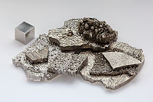

Cobalt
| 
electrolytically refined cobalt chips
|
|||||||||||||||||||||||||||||||||||||||||||||||||||||||||||||||||||||||||||||||||||||||||||||||||||||||||||||||||||||||||||||||||||||||||||||||||||||||||||||||||||||||||||||||||||||||||||||||||||||||||||||||||||||||||||||||||||||
| General properties | |||||||||||||||||||||||||||||||||||||||||||||||||||||||||||||||||||||||||||||||||||||||||||||||||||||||||||||||||||||||||||||||||||||||||||||||||||||||||||||||||||||||||||||||||||||||||||||||||||||||||||||||||||||||||||||||||||||
|---|---|---|---|---|---|---|---|---|---|---|---|---|---|---|---|---|---|---|---|---|---|---|---|---|---|---|---|---|---|---|---|---|---|---|---|---|---|---|---|---|---|---|---|---|---|---|---|---|---|---|---|---|---|---|---|---|---|---|---|---|---|---|---|---|---|---|---|---|---|---|---|---|---|---|---|---|---|---|---|---|---|---|---|---|---|---|---|---|---|---|---|---|---|---|---|---|---|---|---|---|---|---|---|---|---|---|---|---|---|---|---|---|---|---|---|---|---|---|---|---|---|---|---|---|---|---|---|---|---|---|---|---|---|---|---|---|---|---|---|---|---|---|---|---|---|---|---|---|---|---|---|---|---|---|---|---|---|---|---|---|---|---|---|---|---|---|---|---|---|---|---|---|---|---|---|---|---|---|---|---|---|---|---|---|---|---|---|---|---|---|---|---|---|---|---|---|---|---|---|---|---|---|---|---|---|---|---|---|---|---|---|---|---|---|---|---|---|---|---|---|---|---|---|---|---|---|---|---|---|
| Name, symbol | cobalt, Co | ||||||||||||||||||||||||||||||||||||||||||||||||||||||||||||||||||||||||||||||||||||||||||||||||||||||||||||||||||||||||||||||||||||||||||||||||||||||||||||||||||||||||||||||||||||||||||||||||||||||||||||||||||||||||||||||||||||
| Pronunciation | /ˈkoʊbɒlt/ KOH-bolt |
||||||||||||||||||||||||||||||||||||||||||||||||||||||||||||||||||||||||||||||||||||||||||||||||||||||||||||||||||||||||||||||||||||||||||||||||||||||||||||||||||||||||||||||||||||||||||||||||||||||||||||||||||||||||||||||||||||
| Appearance | hard lustrous gray metal | ||||||||||||||||||||||||||||||||||||||||||||||||||||||||||||||||||||||||||||||||||||||||||||||||||||||||||||||||||||||||||||||||||||||||||||||||||||||||||||||||||||||||||||||||||||||||||||||||||||||||||||||||||||||||||||||||||||
| Cobalt in the periodic table | |||||||||||||||||||||||||||||||||||||||||||||||||||||||||||||||||||||||||||||||||||||||||||||||||||||||||||||||||||||||||||||||||||||||||||||||||||||||||||||||||||||||||||||||||||||||||||||||||||||||||||||||||||||||||||||||||||||
|
|||||||||||||||||||||||||||||||||||||||||||||||||||||||||||||||||||||||||||||||||||||||||||||||||||||||||||||||||||||||||||||||||||||||||||||||||||||||||||||||||||||||||||||||||||||||||||||||||||||||||||||||||||||||||||||||||||||
| Atomic number | 27 | ||||||||||||||||||||||||||||||||||||||||||||||||||||||||||||||||||||||||||||||||||||||||||||||||||||||||||||||||||||||||||||||||||||||||||||||||||||||||||||||||||||||||||||||||||||||||||||||||||||||||||||||||||||||||||||||||||||
| Standard atomic weight (±) | 58.933194(4)[1] | ||||||||||||||||||||||||||||||||||||||||||||||||||||||||||||||||||||||||||||||||||||||||||||||||||||||||||||||||||||||||||||||||||||||||||||||||||||||||||||||||||||||||||||||||||||||||||||||||||||||||||||||||||||||||||||||||||||
| Element category | transition metal | ||||||||||||||||||||||||||||||||||||||||||||||||||||||||||||||||||||||||||||||||||||||||||||||||||||||||||||||||||||||||||||||||||||||||||||||||||||||||||||||||||||||||||||||||||||||||||||||||||||||||||||||||||||||||||||||||||||
| Group, block | group 9, d-block | ||||||||||||||||||||||||||||||||||||||||||||||||||||||||||||||||||||||||||||||||||||||||||||||||||||||||||||||||||||||||||||||||||||||||||||||||||||||||||||||||||||||||||||||||||||||||||||||||||||||||||||||||||||||||||||||||||||
| Period | period 4 | ||||||||||||||||||||||||||||||||||||||||||||||||||||||||||||||||||||||||||||||||||||||||||||||||||||||||||||||||||||||||||||||||||||||||||||||||||||||||||||||||||||||||||||||||||||||||||||||||||||||||||||||||||||||||||||||||||||
| Electron configuration | [Ar] 3d7 4s2 | ||||||||||||||||||||||||||||||||||||||||||||||||||||||||||||||||||||||||||||||||||||||||||||||||||||||||||||||||||||||||||||||||||||||||||||||||||||||||||||||||||||||||||||||||||||||||||||||||||||||||||||||||||||||||||||||||||||
| per shell | 2, 8, 15, 2 | ||||||||||||||||||||||||||||||||||||||||||||||||||||||||||||||||||||||||||||||||||||||||||||||||||||||||||||||||||||||||||||||||||||||||||||||||||||||||||||||||||||||||||||||||||||||||||||||||||||||||||||||||||||||||||||||||||||
| Physical properties | |||||||||||||||||||||||||||||||||||||||||||||||||||||||||||||||||||||||||||||||||||||||||||||||||||||||||||||||||||||||||||||||||||||||||||||||||||||||||||||||||||||||||||||||||||||||||||||||||||||||||||||||||||||||||||||||||||||
| Color | metallic gray | ||||||||||||||||||||||||||||||||||||||||||||||||||||||||||||||||||||||||||||||||||||||||||||||||||||||||||||||||||||||||||||||||||||||||||||||||||||||||||||||||||||||||||||||||||||||||||||||||||||||||||||||||||||||||||||||||||||
| Phase | solid | ||||||||||||||||||||||||||||||||||||||||||||||||||||||||||||||||||||||||||||||||||||||||||||||||||||||||||||||||||||||||||||||||||||||||||||||||||||||||||||||||||||||||||||||||||||||||||||||||||||||||||||||||||||||||||||||||||||
| Melting point | 1768 K (1495 °C, 2723 °F) | ||||||||||||||||||||||||||||||||||||||||||||||||||||||||||||||||||||||||||||||||||||||||||||||||||||||||||||||||||||||||||||||||||||||||||||||||||||||||||||||||||||||||||||||||||||||||||||||||||||||||||||||||||||||||||||||||||||
| Boiling point | 3200 K (2927 °C, 5301 °F) | ||||||||||||||||||||||||||||||||||||||||||||||||||||||||||||||||||||||||||||||||||||||||||||||||||||||||||||||||||||||||||||||||||||||||||||||||||||||||||||||||||||||||||||||||||||||||||||||||||||||||||||||||||||||||||||||||||||
| Density near r.t. | 8.90 g·cm−3 | ||||||||||||||||||||||||||||||||||||||||||||||||||||||||||||||||||||||||||||||||||||||||||||||||||||||||||||||||||||||||||||||||||||||||||||||||||||||||||||||||||||||||||||||||||||||||||||||||||||||||||||||||||||||||||||||||||||
| when liquid, at m.p. | 8.86 g·cm−3 | ||||||||||||||||||||||||||||||||||||||||||||||||||||||||||||||||||||||||||||||||||||||||||||||||||||||||||||||||||||||||||||||||||||||||||||||||||||||||||||||||||||||||||||||||||||||||||||||||||||||||||||||||||||||||||||||||||||
| Heat of fusion | 16.06 kJ·mol−1 | ||||||||||||||||||||||||||||||||||||||||||||||||||||||||||||||||||||||||||||||||||||||||||||||||||||||||||||||||||||||||||||||||||||||||||||||||||||||||||||||||||||||||||||||||||||||||||||||||||||||||||||||||||||||||||||||||||||
| Heat of vaporization | 377 kJ·mol−1 | ||||||||||||||||||||||||||||||||||||||||||||||||||||||||||||||||||||||||||||||||||||||||||||||||||||||||||||||||||||||||||||||||||||||||||||||||||||||||||||||||||||||||||||||||||||||||||||||||||||||||||||||||||||||||||||||||||||
| Molar heat capacity | 24.81 J·mol−1·K−1 | ||||||||||||||||||||||||||||||||||||||||||||||||||||||||||||||||||||||||||||||||||||||||||||||||||||||||||||||||||||||||||||||||||||||||||||||||||||||||||||||||||||||||||||||||||||||||||||||||||||||||||||||||||||||||||||||||||||
vapor pressure
|
|||||||||||||||||||||||||||||||||||||||||||||||||||||||||||||||||||||||||||||||||||||||||||||||||||||||||||||||||||||||||||||||||||||||||||||||||||||||||||||||||||||||||||||||||||||||||||||||||||||||||||||||||||||||||||||||||||||
| Atomic properties | |||||||||||||||||||||||||||||||||||||||||||||||||||||||||||||||||||||||||||||||||||||||||||||||||||||||||||||||||||||||||||||||||||||||||||||||||||||||||||||||||||||||||||||||||||||||||||||||||||||||||||||||||||||||||||||||||||||
| Oxidation states | −1, +1, +2, +3, +4, +5[2] (an amphoteric oxide) | ||||||||||||||||||||||||||||||||||||||||||||||||||||||||||||||||||||||||||||||||||||||||||||||||||||||||||||||||||||||||||||||||||||||||||||||||||||||||||||||||||||||||||||||||||||||||||||||||||||||||||||||||||||||||||||||||||||
| Electronegativity | Pauling scale: 1.88 | ||||||||||||||||||||||||||||||||||||||||||||||||||||||||||||||||||||||||||||||||||||||||||||||||||||||||||||||||||||||||||||||||||||||||||||||||||||||||||||||||||||||||||||||||||||||||||||||||||||||||||||||||||||||||||||||||||||
| Ionization energies | 1st: 760.4 kJ·mol−1 2nd: 1648 kJ·mol−1 3rd: 3232 kJ·mol−1 (more) |
||||||||||||||||||||||||||||||||||||||||||||||||||||||||||||||||||||||||||||||||||||||||||||||||||||||||||||||||||||||||||||||||||||||||||||||||||||||||||||||||||||||||||||||||||||||||||||||||||||||||||||||||||||||||||||||||||||
| Atomic radius | empirical: 125 pm | ||||||||||||||||||||||||||||||||||||||||||||||||||||||||||||||||||||||||||||||||||||||||||||||||||||||||||||||||||||||||||||||||||||||||||||||||||||||||||||||||||||||||||||||||||||||||||||||||||||||||||||||||||||||||||||||||||||
| Covalent radius | Low spin: 126±3 pm High spin: 150±7 pm |
||||||||||||||||||||||||||||||||||||||||||||||||||||||||||||||||||||||||||||||||||||||||||||||||||||||||||||||||||||||||||||||||||||||||||||||||||||||||||||||||||||||||||||||||||||||||||||||||||||||||||||||||||||||||||||||||||||
| Miscellanea | |||||||||||||||||||||||||||||||||||||||||||||||||||||||||||||||||||||||||||||||||||||||||||||||||||||||||||||||||||||||||||||||||||||||||||||||||||||||||||||||||||||||||||||||||||||||||||||||||||||||||||||||||||||||||||||||||||||
| Crystal structure | hexagonal close-packed (hcp)
|
||||||||||||||||||||||||||||||||||||||||||||||||||||||||||||||||||||||||||||||||||||||||||||||||||||||||||||||||||||||||||||||||||||||||||||||||||||||||||||||||||||||||||||||||||||||||||||||||||||||||||||||||||||||||||||||||||||
| Speed of sound thin rod | 4720 m·s−1 (at 20 °C) | ||||||||||||||||||||||||||||||||||||||||||||||||||||||||||||||||||||||||||||||||||||||||||||||||||||||||||||||||||||||||||||||||||||||||||||||||||||||||||||||||||||||||||||||||||||||||||||||||||||||||||||||||||||||||||||||||||||
| Thermal expansion | 13.0 µm·m−1·K−1 (at 25 °C) | ||||||||||||||||||||||||||||||||||||||||||||||||||||||||||||||||||||||||||||||||||||||||||||||||||||||||||||||||||||||||||||||||||||||||||||||||||||||||||||||||||||||||||||||||||||||||||||||||||||||||||||||||||||||||||||||||||||
| Thermal conductivity | 100 W·m−1·K−1 | ||||||||||||||||||||||||||||||||||||||||||||||||||||||||||||||||||||||||||||||||||||||||||||||||||||||||||||||||||||||||||||||||||||||||||||||||||||||||||||||||||||||||||||||||||||||||||||||||||||||||||||||||||||||||||||||||||||
| Electrical resistivity | 62.4 nΩ·m (at 20 °C) | ||||||||||||||||||||||||||||||||||||||||||||||||||||||||||||||||||||||||||||||||||||||||||||||||||||||||||||||||||||||||||||||||||||||||||||||||||||||||||||||||||||||||||||||||||||||||||||||||||||||||||||||||||||||||||||||||||||
| Magnetic ordering | ferromagnetic | ||||||||||||||||||||||||||||||||||||||||||||||||||||||||||||||||||||||||||||||||||||||||||||||||||||||||||||||||||||||||||||||||||||||||||||||||||||||||||||||||||||||||||||||||||||||||||||||||||||||||||||||||||||||||||||||||||||
| Young's modulus | 209 GPa | ||||||||||||||||||||||||||||||||||||||||||||||||||||||||||||||||||||||||||||||||||||||||||||||||||||||||||||||||||||||||||||||||||||||||||||||||||||||||||||||||||||||||||||||||||||||||||||||||||||||||||||||||||||||||||||||||||||
| Shear modulus | 75 GPa | ||||||||||||||||||||||||||||||||||||||||||||||||||||||||||||||||||||||||||||||||||||||||||||||||||||||||||||||||||||||||||||||||||||||||||||||||||||||||||||||||||||||||||||||||||||||||||||||||||||||||||||||||||||||||||||||||||||
| Bulk modulus | 180 GPa | ||||||||||||||||||||||||||||||||||||||||||||||||||||||||||||||||||||||||||||||||||||||||||||||||||||||||||||||||||||||||||||||||||||||||||||||||||||||||||||||||||||||||||||||||||||||||||||||||||||||||||||||||||||||||||||||||||||
| Poisson ratio | 0.31 | ||||||||||||||||||||||||||||||||||||||||||||||||||||||||||||||||||||||||||||||||||||||||||||||||||||||||||||||||||||||||||||||||||||||||||||||||||||||||||||||||||||||||||||||||||||||||||||||||||||||||||||||||||||||||||||||||||||
| Mohs hardness | 5.0 | ||||||||||||||||||||||||||||||||||||||||||||||||||||||||||||||||||||||||||||||||||||||||||||||||||||||||||||||||||||||||||||||||||||||||||||||||||||||||||||||||||||||||||||||||||||||||||||||||||||||||||||||||||||||||||||||||||||
| Vickers hardness | 1043 MPa | ||||||||||||||||||||||||||||||||||||||||||||||||||||||||||||||||||||||||||||||||||||||||||||||||||||||||||||||||||||||||||||||||||||||||||||||||||||||||||||||||||||||||||||||||||||||||||||||||||||||||||||||||||||||||||||||||||||
| Brinell hardness | 470–3000 MPa | ||||||||||||||||||||||||||||||||||||||||||||||||||||||||||||||||||||||||||||||||||||||||||||||||||||||||||||||||||||||||||||||||||||||||||||||||||||||||||||||||||||||||||||||||||||||||||||||||||||||||||||||||||||||||||||||||||||
| CAS Registry Number | 7440-48-4 | ||||||||||||||||||||||||||||||||||||||||||||||||||||||||||||||||||||||||||||||||||||||||||||||||||||||||||||||||||||||||||||||||||||||||||||||||||||||||||||||||||||||||||||||||||||||||||||||||||||||||||||||||||||||||||||||||||||
| History | |||||||||||||||||||||||||||||||||||||||||||||||||||||||||||||||||||||||||||||||||||||||||||||||||||||||||||||||||||||||||||||||||||||||||||||||||||||||||||||||||||||||||||||||||||||||||||||||||||||||||||||||||||||||||||||||||||||
| Discovery | Georg Brandt (1732) | ||||||||||||||||||||||||||||||||||||||||||||||||||||||||||||||||||||||||||||||||||||||||||||||||||||||||||||||||||||||||||||||||||||||||||||||||||||||||||||||||||||||||||||||||||||||||||||||||||||||||||||||||||||||||||||||||||||
| Most stable isotopes | |||||||||||||||||||||||||||||||||||||||||||||||||||||||||||||||||||||||||||||||||||||||||||||||||||||||||||||||||||||||||||||||||||||||||||||||||||||||||||||||||||||||||||||||||||||||||||||||||||||||||||||||||||||||||||||||||||||
|
|||||||||||||||||||||||||||||||||||||||||||||||||||||||||||||||||||||||||||||||||||||||||||||||||||||||||||||||||||||||||||||||||||||||||||||||||||||||||||||||||||||||||||||||||||||||||||||||||||||||||||||||||||||||||||||||||||||
{kind=link}
Cobalt is a chemical element with symbol Co and atomic number 27. Like nickel, cobalt in the Earth's crust is found only in chemically combined form, save for small deposits found in alloys of natural meteoric iron. The free element, produced by reductive smelting, is a hard, lustrous, silver-gray metal.
Cobalt-based blue pigments (cobalt blue) have been used since ancient times for jewelry and paints, and to impart a distinctive blue tint to glass, but the color was later thought by alchemists to be due to the known metal bismuth. Miners had long used the name kobold ore (German for goblin ore) for some of the blue-pigment producing minerals; they were so named because they were poor in known metals, and gave poisonous arsenic-containing fumes upon smelting. In 1735, such ores were found to be reducible to a new metal (the first discovered since ancient times), and this was ultimately named for the kobold.
Today, some cobalt is produced specifically from various metallic-lustered ores, for example cobaltite (CoAsS), but the main source of the element is as a by-product of copper and nickel mining. The copper belt in the Democratic Republic of the Congo and Zambia yields most of the cobalt mined worldwide.
Cobalt is primarily used as the metal, in the preparation of magnetic, wear-resistant and high-strength alloys. Its compounds cobalt silicate and cobalt(II) aluminate (CoAl2O4, cobalt blue) give a distinctive deep blue color to glass, ceramics, inks, paints and varnishes. Cobalt occurs naturally as only one stable isotope, cobalt-59. Cobalt-60 is a commercially important radioisotope, used as a radioactive tracer and for the production of high energy gamma rays.
Cobalt is the active center of coenzymes called cobalamins, the most common example of which is vitamin B12. As such it is an essential trace dietary mineral for all animals. Cobalt in inorganic form is also an active nutrient for bacteria, algae and fungi.
Contents
[hide]Characteristics
{kind=link}
Cobalt is a ferromagnetic metal with a specific gravity of 8.9. The Curie temperature is 1,115 °C (2,039 °F)[3] and the magnetic moment is 1.6–1.7 Bohr magnetons per atom.[4] Cobalt has a relative permeability two-thirds that of iron.[5] Metallic cobalt occurs as two crystallographic structures: hcp and fcc. The ideal transition temperature between the hcp and fcc structures is 450 °C (842 °F), but in practice, the energy difference is so small that random intergrowth of the two is common.[6][7][8]
Cobalt is a weakly reducing metal that is protected from oxidation by a passivating oxide film. It is attacked by halogens and sulfur. Heating in oxygen produces Co3O4 which loses oxygen at 900 °C (1,650 °F) to give the monoxide CoO.[9] The metal reacts with fluorine (F2) at 520 K to give CoF3; with chlorine (Cl2), bromine (Br2) and iodine (I2), the corresponding binary halides are formed. It does not react with hydrogen gas (H2) or nitrogen gas (N2) even when heated, but it does react with boron, carbon, phosphorus, arsenic and sulfur.[10] At ordinary temperatures, it reacts slowly with mineral acids, and very slowly with moist, but not with dry, air.
Compounds
Common oxidation states
of cobalt include +2 and +3, although compounds with oxidation states
ranging from −3 to +4 are also known. A common oxidation state for
simple compounds is +2 (cobalt(II)). These salts form the pink-colored metal aquo complex [Co(H2O)6]2+ in water. Addition of chloride gives the intensely blue [CoCl
4]2−
.[2]
Oxygen and chalcogen compounds
Several oxides of cobalt are known. Green cobalt(II) oxide (CoO) has rocksalt structure. It is readily oxidized with water and oxygen to brown cobalt(III) hydroxide (Co(OH)3). At temperatures of 600–700 °C, CoO oxidizes to the blue cobalt(II,III) oxide (Co3O4), which has a spinel structure.[2] Black cobalt(III) oxide (Co2O3) is also known.[11] Cobalt oxides are antiferromagnetic at low temperature: CoO (Néel temperature 291 K) and Co3O4 (Néel temperature: 40 K), which is analogous to magnetite (Fe3O4), with a mixture of +2 and +3 oxidation states.[12]
The principal chalcogenides of cobalt include the black cobalt(II) sulfides, CoS2, which adopts a pyrite-like structure, and cobalt(III) sulfide (Co2S3).
Halides
{kind=link}
Four dihalides of cobalt(II) are known: cobalt(II) fluoride (CoF2, pink), cobalt(II) chloride (CoCl2, blue), cobalt(II) bromide (CoBr2, green), cobalt(II) iodide (CoI2, blue-black). These halides exist in anhydrous and hydrated forms. Whereas the anhydrous dichloride is blue, the hydrate is red.[13]
The reduction potential for the reaction
- Co3+
+ e− → Co2+
is +1.92 V, beyond that for chlorine to chloride, +1.36 V. As a consequence cobalt(III) and chloride would result in the cobalt(III) being reduced to cobalt(II). Because the reduction potential for fluorine to fluoride is so high, +2.87 V, cobalt(III) fluoride is one of the few simple stable cobalt(III) compounds. Cobalt(III) fluoride, which is used in some fluorination reactions, reacts vigorously with water.[9]
Coordination compounds
As for all metals, molecular compounds and polyatomic ions of cobalt are classified as coordination complexes, that is molecules or ions that contain cobalt linked to several ligands. The principles of electronegativity and hardness–softness of a series of ligands can be used to explain the usual oxidation state of the cobalt. For example Co+3 complexes tend to have ammine ligands. As phosphorus is softer than nitrogen, phosphine ligands tend to feature the softer Co2+ and Co+, an example being tris(triphenylphosphine)cobalt(I) chloride ((P(C6H5)3)3CoCl). The more electronegative (and harder) oxide and fluoride can stabilize Co4+ and Co5+ derivatives, e.g. caesium hexafluorocobaltate (Cs2CoF6) and potassium percobaltate (K3CoO4).[9]
Alfred Werner, a Nobel-prize winning pioneer in coordination chemistry, worked with compounds of empirical formula [Co(NH3)6]Cl3. One of the isomers determined was cobalt(III) hexammine chloride. This coordination complex, a "typical" Werner-type complex, consists of a central cobalt atom coordinated by six ammine ligands orthogonal to each other and three chloride counteranions. Using chelating ethylenediamine ligands in place of ammonia gives tris(ethylenediamine)cobalt(III) chloride ([Co(en)3]Cl3), which was one of the first coordination complexes that was resolved into optical isomers. The complex exists as both either right- or left-handed forms of a "three-bladed propeller". This complex was first isolated by Werner as yellow-gold needle-like crystals.[14][15]
Organometallic compounds
Cobaltocene is a structural analog to ferrocene, where cobalt substitutes for iron. Cobaltocene is sensitive to oxidation, much more than ferrocene.[16] Cobalt carbonyl (Co2(CO)8) is a catalyst in carbonylation and hydrosilylation reactions.[17] Vitamin B12 (see below) is an organometallic compound found in nature and is the only vitamin to contain a metal atom.[18]
Isotopes
59Co is the only stable cobalt isotope and the only isotope to exist naturally on Earth. 22 radioisotopes have been characterized with the most stable being 60Co with a half-life of 5.2714 years, 57Co with a half-life of 271.8 days, 56Co with a half-life of 77.27 days, and 58Co with a half-life of 70.86 days. All of the remaining radioactive isotopes have half-lives that are shorter than 18 hours, and the majority of these are shorter than 1 second. This element also has 4 meta states, all of which have half-lives shorter than 15 minutes.[19]
The isotopes of cobalt range in atomic weight from 50 u (50Co) to 73 u (73Co). The primary decay mode for isotopes with atomic mass unit values less than that of the most abundant stable isotope, 59Co, is electron capture and the primary mode of decay for those of greater than 59 atomic mass units is beta decay. The primary decay products before 59Co are element 26 (iron) isotopes and the primary products after are element 28 (nickel) isotopes.[19]
History
{kind=link}
Cobalt compounds have been used for centuries to impart a rich blue color to glass, glazes and ceramics. Cobalt has been detected in Egyptian sculpture and Persian jewelry from the third millennium BC, in the ruins of Pompeii (destroyed in 79 AD), and in China dating from the Tang dynasty (618–907 AD) and the Ming dynasty (1368–1644 AD).[20]
Cobalt has been used to color glass since the Bronze Age. The excavation of the Uluburun shipwreck yielded an ingot of blue glass, which was cast during the 14th century BC.[21][22] Blue glass items from Egypt are colored with copper, iron, or cobalt. The oldest cobalt-colored glass was from the time of the Eighteenth dynasty in Egypt (1550–1292 BC). The location where the cobalt compounds were obtained is unknown.[23][24]
The word cobalt is derived from the German kobalt, from kobold meaning "goblin", a superstitious term used for the ore of cobalt by miners. The first attempts at smelting these ores to produce metals such as copper or nickel failed, yielding simply powder (cobalt(II) oxide) instead. Also, because the primary ores of cobalt always contain arsenic, smelting the ore oxidized the arsenic content into the highly toxic and volatile arsenic oxide, which also decreased the reputation of the ore for the miners.[25]
Swedish chemist Georg Brandt (1694–1768) is credited with discovering cobalt circa 1735, showing it to be a new previously unknown element different from bismuth and other traditional metals, and calling it a new "semi-metal."[26][27] He was able to show that compounds of cobalt metal were the source of the blue color in glass, which previously had been attributed to the bismuth found with cobalt. Cobalt became the first metal to be discovered since the pre-historical period, during which all the known metals (iron, copper, silver, gold, zinc, mercury, tin, lead and bismuth) had no recorded discoverers.[28]
During the 19th century, a significant part of the world's production of cobalt blue (a dye made with cobalt compounds and alumina) and smalt (cobalt glass powdered for use for pigment purposes in ceramics and painting) was carried out at the Norwegian Blaafarveværket.[29][30] The first mines for the production of smalt in the 16th to 18th century were located in Norway, Sweden, Saxony and Hungary. With the discovery of cobalt ore in New Caledonia in 1864 the mining of cobalt in Europe declined. With the discovery of ore deposits in Ontario, Canada in 1904 and the discovery of even larger deposits in the Katanga Province in the Congo in 1914 the mining operations shifted again.[25] With the Shaba conflict starting in 1978, the main source for cobalt, the copper mines of Katanga Province, nearly stopped their production.[31][32] The impact on the world cobalt economy from this conflict was however smaller than expected. Cobalt being a rare metal and the pigment being highly toxic, the industry had already established effective ways for recycling cobalt materials and in some cases was able to change to cobalt-free alternatives.[31][32]
In 1938, John Livingood and Glenn T. Seaborg discovered cobalt-60.[33] This isotope was famously used at Columbia University in the 1950s to establish parity violation in radioactive beta decay.[34][35]
After World War II, the US wanted to be sure it was never short of the ore needed for military cobalt uses (as the Germans had been during that war) and explored for cobalt within the U.S. border. A good supply of the ore needed was found in Idaho near Blackbird canyon in the side of a mountain. The firm Calera Mining Company got production started at the site.[36]
Occurrence
The stable form of cobalt is created in supernovas via the r-process.[37] It comprises 0.0029% of the Earth's crust and is one of the first transition metals.
Free cobalt (the native metal) is not found in on Earth due to the amount of oxygen in the atmosphere and chlorine in the ocean. Oxygen and chlorine are abundant enough in the upper layers of the Earth's crust so as to make native metal cobalt formation extremely rare. Except as recently delivered in meteoric iron, pure cobalt in native metal form is unknown on Earth (see below). Though the element is of medium abundance, natural compounds of cobalt are numerous. Small amounts of cobalt compounds are found in most rocks, soil, plants, and animals.
In nature, cobalt is frequently associated with nickel, and both are characteristic components of meteoric iron, though cobalt is much less abundant in iron meteorites than nickel. As with nickel, cobalt in meteoric iron alloys may have been well enough protected from oxygen and moisture to occur as the free metal,[38] a state which otherwise is not seen with either element in the ancient terrestrial crust.
Cobalt in compound form occurs as a minor component of copper and nickel minerals. It is the major metallic component in combination with sulfur and arsenic in the sulfidic cobaltite (CoAsS), safflorite (CoAs2), glaucodot ((Co,Fe)AsS), and skutterudite (CoAs3) minerals.[9] The mineral cattierite is similar to pyrite and occurs together with vaesite in the copper deposits of the Katanga Province.[39] Upon contact with the atmosphere, weathering occurs and the sulfide minerals oxidize to form pink erythrite ("cobalt glance": Co3(AsO4)2·8H2O) and spherocobaltite (CoCO3).[40][41]
Production
{kind=link}
{kind=link}
{kind=link}
The main ores of cobalt are cobaltite, erythrite, glaucodot and skutterudite (see above), but most cobalt is obtained not by active mining of cobalt ores, but rather by reducing cobalt compounds that occur as by-products of nickel and copper mining activities.[42][43]
In 2005, the copper deposits in the Katanga Province (former Shaba province) of the Democratic Republic of the Congo were the top producer of cobalt with almost 40% world share, reports the British Geological Survey.[44] The political situation in the Congo influences the price of cobalt significantly.[45]
The Mukondo Mountain project, operated by the Central African Mining and Exploration Company in Katanga, may be the richest cobalt reserve in the world. It is estimated to be able to produce about one third of total global production of cobalt in 2008.[46] In July 2009 CAMEC announced a long term agreement under which CAMEC would deliver its entire annual production of cobalt in concentrate from Mukondo Mountain to Zhejiang Galico Cobalt & Nickel Materials of China.[47]
Several methods exist for the separation of cobalt from copper and nickel. They depend on the concentration of cobalt and the exact composition of the used ore. One separation step involves froth flotation, in which surfactants bind to different ore components, leading to an enrichment of cobalt ores. Subsequent roasting converts the ores to the cobalt sulfate, whereas the copper and the iron are oxidized to the oxide. The leaching with water extracts the sulfate together with the arsenates. The residues are further leached with sulfuric acid yielding a solution of copper sulfate. Cobalt can also be leached from the slag of the copper smelter.[48]
The products of the above-mentioned processes are transformed into the cobalt oxide (Co3O4). This oxide is reduced to the metal by the aluminothermic reaction or reduction with carbon in a blast furnace.[9]
Applications
The main application of cobalt is as the free metal, in production of certain high performance alloys.[42][43]
Alloys
Cobalt-based superalloys consume most of the produced cobalt.[42][43] The temperature stability of these alloys makes them suitable for use in turbine blades for gas turbines and jet aircraft engines, though nickel-based single crystal alloys surpass them in this regard.[49] Cobalt-based alloys are also corrosion and wear-resistant. This makes them useful in the medical field, where cobalt is often used (along with titanium) for orthopedic implants that do not wear down over time. The development of the wear-resistant cobalt alloys started in the first decade of the 19th century with the stellite alloys, which are cobalt-chromium alloys with varying tungsten and carbon content. The formation of chromium and tungsten carbides makes them very hard and wear resistant.[50] Special cobalt-chromium-molybdenum alloys like Vitallium are used for prosthetic parts such as hip and knee replacements.[51] Cobalt alloys are also used for dental prosthetics, where they are useful to avoid allergies to nickel.[52] Some high speed steel drill bits also use cobalt to increase heat and wear-resistance. The special alloys of aluminium, nickel, cobalt and iron, known as Alnico, and of samarium and cobalt (samarium-cobalt magnet) are used in permanent magnets.[53] It is also alloyed with 95% platinum for jewelry purposes, yielding an alloy that is suitable for fine detailed casting and is also slightly magnetic.[54]
Batteries
Lithium cobalt oxide (LiCoO2) is widely used in lithium ion battery cathodes. The material is composed of cobalt oxide layers in which the lithium is intercalated. During discharging the lithium intercalated between the layers is set free as lithium ion.[55] Nickel-cadmium[56] (NiCd) and nickel metal hydride[57] (NiMH) batteries also contain significant amounts of cobalt; the cobalt improves the oxidation capabilities of nickel in the battery.[56]
Catalysts
Several cobalt compounds are used in chemical reactions as oxidation catalysts. Cobalt acetate is used for the conversion of xylene to terephthalic acid, the precursor to the bulk polymer polyethylene terephthalate. Typical catalysts are the cobalt carboxylates (known as cobalt soaps). They are also used in paints, varnishes, and inks as "drying agents" through the oxidation of drying oils.[55] The same carboxylates are used to improve the adhesion of the steel to rubber in steel-belted radial tires.
Cobalt-based catalysts are also important in reactions involving carbon monoxide. Steam reforming, useful in hydrogen production, uses cobalt oxide-base catalysts. Cobalt is also a catalyst in the Fischer–Tropsch process, used in the hydrogenation of carbon monoxide into liquid fuels.[58] The hydroformylation of alkenes often rely on cobalt octacarbonyl as the catalyst,[59] although such processes have been partially displaced by more efficient iridium- and rhodium-based catalysts, e.g. the Cativa process.
The hydrodesulfurization of petroleum uses a catalyst derived from cobalt and molybdenum. This process helps to rid petroleum of sulfur impurities that interfere with the refining of liquid fuels.[55]
Pigments and coloring
{kind=link}
{kind=link}
Before the 19th century, the predominant use of cobalt was as a pigment. Since the Middle Ages, it has been involved in the production of smalt, a blue colored glass. Smalt is produced by melting a mixture of the roasted mineral smaltite, quartz and potassium carbonate, yielding a dark blue silicate glass which is ground after the production.[60] Smalt was widely used for the coloration of glass and as pigment for paintings.[61] In 1780, Sven Rinman discovered cobalt green and in 1802 Louis Jacques Thénard discovered cobalt blue.[62] The two varieties of cobalt blue pigment, cobalt blue (cobalt aluminate) and cobalt green (a mixture of cobalt(II) oxide and zinc oxide), were used as pigments for paintings because of their superior stability.[63][64]
Radioisotopes
Cobalt-60 (Co-60 or 60Co) is useful as a gamma ray source because it can be produced in predictable quantity and high activity by bombarding cobalt with neutrons. It produces two gamma rays with energies of 1.17 and 1.33 MeV.[19][65]
Its uses include external beam radiotherapy, sterilization of medical supplies and medical waste, radiation treatment of foods for sterilization (cold pasteurization),[66] industrial radiography (e.g. weld integrity radiographs), density measurements (e.g. concrete density measurements), and tank fill height switches. The metal has the unfortunate habit of producing a fine dust, causing problems with radiation protection. Cobalt from radiotherapy machines has been a serious hazard when not disposed of properly, and one of the worst radiation contamination accidents in North America occurred in 1984, after a discarded radiotherapy unit containing cobalt-60 was mistakenly disassembled in a junkyard in Juarez, Mexico.[67][68]
Cobalt-60 has a radioactive half-life of 5.27 years. This decrease in activity requires periodic replacement of the sources used in radiotherapy and is one reason why cobalt machines have been largely replaced by linear accelerators in modern radiation therapy.[69]
Cobalt-57 (Co-57 or 57Co) is a cobalt radioisotope most often used in medical tests, as a radiolabel for vitamin B12 uptake, and for the Schilling test. Cobalt-57 is used as a source in Mössbauer spectroscopy and is one of several possible sources in X-ray fluorescence devices.[70][71]
Nuclear weapon designs could intentionally incorporate 59Co, some of which would be activated in a nuclear explosion to produce 60Co. The 60Co, dispersed as nuclear fallout, creates what is sometimes called a cobalt bomb.[72]
Other uses
Other uses of cobalt are in electroplating, owing to its attractive appearance, hardness and resistance to oxidation,[73] and as ground coats for porcelain enamels.[74]
Biological role
{kind=link}
{kind=link}
Cobalt is essential to all animals. It is a key constituent of cobalamin, also known as vitamin B12, which is the primary biological reservoir of cobalt as an "ultratrace" element.[75][76] Bacteria in the guts of ruminant animals convert cobalt salts into vitamin B12, a compound which can only be produced by bacteria or archaea. The minimum presence of cobalt in soils therefore markedly improves the health of grazing animals, and an uptake of 0.20 mg/kg a day is recommended for them, as they can obtain vitamin B12 in no other way.[77]
In the early 20th century during the development for farming of the North Island Volcanic Plateau of New Zealand, cattle suffered from what was termed "bush sickness". It was discovered that the volcanic soils lacked cobalt salts, which was necessary for cattle.[78] The ailment was cured by adding small amounts of cobalt to fertilizers in the form of Superphosphate (at the time derived from Canadian sources).
In the 1930s "coast disease" of sheep in the Ninety Mile Desert of the Southeast of South Australia was found to be due to nutrient deficiencies of the trace elements cobalt and copper. The cobalt deficiency was overcome by the development of "cobalt bullets", dense pellets of cobalt oxide mixed with clay, which are orally inserted to lodge in the animal's rumen.[79]
Non-ruminant herbivores produce vitamin B12 from bacteria in their colons which again make the vitamin from simple cobalt salts. However the vitamin cannot be absorbed from the colon, and thus non-ruminants must ingest feces to obtain the nutrient. Animals that do not follow these methods of getting vitamin B12 from their own gastrointestinal bacteria or that of other animals, must obtain the vitamin pre-made in other animal products in their diet, and they cannot benefit from ingesting simple cobalt salts.
The cobalamin-based proteins use corrin to hold the cobalt. Coenzyme B12 features a reactive C-Co bond, which participates in its reactions.[80] In humans, B12 exists with two types of alkyl ligand: methyl and adenosyl. MeB12 promotes methyl (-CH3) group transfers. The adenosyl version of B12 catalyzes rearrangements in which a hydrogen atom is directly transferred between two adjacent atoms with concomitant exchange of the second substituent, X, which may be a carbon atom with substituents, an oxygen atom of an alcohol, or an amine. Methylmalonyl coenzyme A mutase (MUT) converts MMl-CoA to Su-CoA, an important step in the extraction of energy from proteins and fats.[81]
Although far less common than other metalloproteins (e.g. those of zinc and iron), cobaltoproteins are known aside from B12. These proteins include methionine aminopeptidase 2 an enzyme that occurs in humans and other mammals which does not use the corrin ring of B12, but binds cobalt directly. Another non-corrin cobalt enzyme is nitrile hydratase, an enzyme in bacteria that are able to metabolize nitriles.[82]
Precautions
{kind=link}
Cobalt is an essential element for life in minute amounts. The LD50 value for soluble cobalt salts has been estimated to be between 150 and 500 mg/kg. Thus, for a 100 kg person the LD50 for a single dose would be about 20 grams.[83]
However, chronic cobalt ingestion has caused serious health problems at doses far less than the lethal dose. In 1966, the addition of cobalt compounds to stabilize beer foam in Canada led to a peculiar form of toxin-induced cardiomyopathy, which came to be known as beer drinker's cardiomyopathy.[84][85]
After nickel and chromium, cobalt is a major cause of contact dermatitis.[86]
Cobalt can be effectively absorbed by charred pigs bones; however this process is inhibited by copper and zinc; which have greater affinities to bone char.[87]
References
- Jump up ^ Standard Atomic Weights 2013. Commission on Isotopic Abundances and Atomic Weights
- ^ Jump up to: a b c Greenwood, Norman N.; Earnshaw, Alan (1997). Chemistry of the Elements (2nd ed.). Butterworth-Heinemann. pp. 1117–1119. ISBN 0080379419.
- Jump up ^ Enghag, Per (2004). "Cobalt". Encyclopedia of the elements: technical data, history, processing, applications. p. 667. ISBN 978-3-527-30666-4.
- Jump up ^ Murthy, V. S. R (2003). "Magnetic Properties of Materials". Structure And Properties Of Engineering Materials. p. 381. ISBN 978-0-07-048287-6.
- Jump up ^ Celozzi, Salvatore; Araneo, Rodolfo; Lovat, Giampiero (2008-05-01). Electromagnetic Shielding. p. 27. ISBN 978-0-470-05536-6.
- Jump up ^ Lee, B.; Alsenz, R.; Ignatiev, A.; Van Hove, M.; Van Hove, M. A. (1978). "Surface structures of the two allotropic phases of cobalt". Physical Review B 17 (4): 1510. Bibcode:1978PhRvB..17.1510L. doi:10.1103/PhysRevB.17.1510.
- Jump up ^ "Properties and Facts for Cobalt". American Elements. Retrieved 2008-09-19.
- Jump up ^ Cobalt, Centre d'Information du Cobalt, Brussels (1966). Cobalt. p. 45.
- ^ Jump up to: a b c d e Holleman, A. F.; Wiberg, E.; Wiberg, N. (2007). "Cobalt". Lehrbuch der Anorganischen Chemie (in German) (102nd ed.). de Gruyter. pp. 1146–1152. ISBN 978-3-11-017770-1.
- Jump up ^ Housecroft, C. E.; Sharpe, A. G. (2008). Inorganic Chemistry (3rd ed.). Prentice Hall. p. 722. ISBN 978-0131755536.
- Jump up ^ Krebs, Robert E. (2006). The history and use of our earth's chemical elements: a reference guide (2nd ed.). Greenwood Publishing Group. p. 107. ISBN 0-313-33438-2.
- Jump up ^ Petitto, Sarah C.; Marsh, Erin M.; Carson, Gregory A.; Langell, Marjorie A. (2008). "Cobalt oxide surface chemistry: The interaction of CoO(100), Co3O4(110) and Co3O4(111) with oxygen and water". Journal of Molecular Catalysis A: Chemical 281: 49. doi:10.1016/j.molcata.2007.08.023.
- Jump up ^ Greenwood, Norman N.; Earnshaw, Alan (1997). Chemistry of the Elements (2nd ed.). Butterworth-Heinemann. pp. 1119–1120. ISBN 0080379419.
- Jump up ^ Werner, A. (1912). "Zur Kenntnis des asymmetrischen Kobaltatoms. V". Chemische Berichte 45: 121–130. doi:10.1002/cber.19120450116.
- Jump up ^ Gispert, Joan Ribas (2008). "Early Theories of Coordination Chemistry". Coordination chemistry. pp. 31–33. ISBN 978-3-527-31802-5.
- Jump up ^ James E. House (2008). Inorganic chemistry. Academic Press. pp. 767–. ISBN 978-0-12-356786-4. Retrieved 2011-05-16.
- Jump up ^ Charles M. Starks; Charles Leonard Liotta; Marc Halpern (1994). Phase-transfer catalysis: fundamentals, applications, and industrial perspectives. Springer. pp. 600–. ISBN 978-0-412-04071-9. Retrieved 2011-05-16.
- Jump up ^ Sigel, Astrid; Sigel, Helmut; Sigel, Roland, eds. (2010). Organometallics in Environment and Toxicology (Metal Ions in Life Sciences). Cambridge, UK: Royal Society of Chemistry Publishing. p. 75. ISBN 978-1-84755-177-1.
- ^ Jump up to: a b c Audi, G.; Bersillon, O.; Blachot, J.; Wapstra, A.H. (2003). "The NUBASE Evaluation of Nuclear and Decay Properties". Nuclear Physics A (Atomic Mass Data Center) 729: 3–128. Bibcode:2003NuPhA.729....3A. doi:10.1016/j.nuclphysa.2003.11.001.
- Jump up ^ Cobalt, Encyclopædia Britannica Online.
- Jump up ^ Pulak, Cemal (1998). "The Uluburun shipwreck: an overview". International Journal of Nautical Archaeology 27 (3): 188–224. doi:10.1111/j.1095-9270.1998.tb00803.x.
- Jump up ^ Henderson, Julian (2000). "Glass". The Science and Archaeology of Materials: An Investigation of Inorganic Materials. Routledge. p. 60. ISBN 978-0-415-19933-9.
- Jump up ^ Rehren, Th. (2003). "Aspects of the Production of Cobalt-blue Glass in Egypt". Archaeometry 43 (4): 483–489. doi:10.1111/1475-4754.00031.
- Jump up ^ Lucas, A. (2003). Ancient Egyptian Materials and Industries. Kessinger Publishing. p. 217. ISBN 978-0-7661-5141-3.
- ^ Jump up to: a b Dennis, W. H (2010). "Cobalt". Metallurgy: 1863–1963. pp. 254–256. ISBN 978-0-202-36361-5.
- Jump up ^ Georg
Brandt first showed cobalt to be a new metal in: G. Brandt (1735)
"Dissertatio de semimetallis" (Dissertation on semi-metals), Acta Literaria et Scientiarum Sveciae (Journal of Swedish literature and sciences), vol. 4, pages 1–10.
See also: (1) G. Brandt (1746) "Rön och anmärkningar angäende en synnerlig färg — cobolt" (Observations and remarks concerning an extraordinary pigment — cobalt), Kongliga Svenska vetenskapsakademiens handlingar (Transactions of the Royal Swedish Academy of Science), vol.7, pages 119–130; (2) G. Brandt (1748) “Cobalti nova species examinata et descripta” (Cobalt, a new element examined and described), Acta Regiae Societatis Scientiarum Upsaliensis (Journal of the Royal Scientific Society of Uppsala), 1st series, vol. 3 , pages 33–41; (3) James L. Marshall and Virginia R. Marshall (Spring 2003) "Rediscovery of the Elements: Riddarhyttan, Sweden," The Hexagon (official journal of the Alpha Chi Sigma fraternity of chemists), vol. 94, no. 1, pages 3–8. - Jump up ^ Wang, Shijie (2006). "Cobalt—Its recovery, recycling, and application". Journal of the Minerals, Metals and Materials Society 58 (10): 47–50. Bibcode:2006JOM....58j..47W. doi:10.1007/s11837-006-0201-y.
- Jump up ^ Weeks, Mary Elvira (1932). "The discovery of the elements. III. Some eighteenth-century metals". Journal of Chemical Education 9: 22. Bibcode:1932JChEd...9...22W. doi:10.1021/ed009p22.
- Jump up ^ Ivar B. Ramberg (2008). The making of a land: geology of Norway. Geological Society. pp. 98–. ISBN 978-82-92394-42-7. Retrieved 2011-04-30.
- Jump up ^ Cyclopaedia (1852). C. Tomlinson. 9 divs, ed. Cyclopædia of useful arts & manufactures. pp. 400–. Retrieved 2011-04-30.
- ^ Jump up to: a b Wellmer, Friedrich-Wilhelm; Becker-Platen, Jens Dieter. "Global Nonfuel Mineral Resources and Sustainability". United States Geological Survey.
- ^ Jump up to: a b Westing, Arthur H; Stockholm International Peace Research Institute (1986). "cobalt". Global resources and international conflict: environmental factors in strategic policy and action. pp. 75–78. ISBN 978-0-19-829104-6.
- Jump up ^ Livingood, J.; Seaborg, G. (1938). "Long-Lived Radio Cobalt Isotopes". Physical Review 53 (10): 847. Bibcode:1938PhRv...53..847L. doi:10.1103/PhysRev.53.847.
- Jump up ^ Wu, C. S. (1957). "Experimental Test of Parity Conservation in Beta Decay". Physical Review 105 (4): 1413. Bibcode:1957PhRv..105.1413W. doi:10.1103/PhysRev.105.1413.
- Jump up ^ Wróblewski, A.K. (2008). "The Downfall of Parity – the Revolution That Happened Fifty Years Ago" (PDF). Acta Physica Polonica B 39 (2): 251. Bibcode:2008AcPPB..39..251W.
- Jump up ^ "Richest Hole In The Mountain" Popular Mechanics, May 1952, pp. 65–69.
- Jump up ^ Ptitsyn, D. A.; Chechetkin, V. M. (1980). "Creation of the Iron-Group Elements in a Supernova Explosion". Soviet Astronomy Letters 6: 61–64. Bibcode:1980SvAL....6...61P.
- Jump up ^ Metallic Co in meteorites
- Jump up ^ Kerr, Paul F. (1945). "Cattierite and Vaesite: New Co-Ni Minerals from the Belgian Kongo" (PDF). American Mineralogist 30: 483–492.
- Jump up ^ Buckley, A.N. (1987). "The Surface Oxidation of Cobaltite". Australian Journal of Chemistry 40 (2): 231. doi:10.1071/CH9870231.
- Jump up ^ Young, R (1957). "The geochemistry of cobalt". Geochimica et Cosmochimica Acta 13: 28. Bibcode:1957GeCoA..13...28Y. doi:10.1016/0016-7037(57)90056-X.
- ^ Jump up to: a b c Shedd, Kim B. "Mineral Yearbook 2006: Cobalt" (PDF). United States Geological Survey. Retrieved 2008-10-26.
- ^ Jump up to: a b c Shedd, Kim B. "Commodity Report 2008: Cobalt" (PDF). United States Geological Survey. Retrieved 2008-10-26.
- Jump up ^ "African Mineral Production" (PDF). British Geological Survey. Retrieved 2009-06-06.
- Jump up ^ Wellmer, Friedrich-Wilhelm; Becker-Platen, Jens Dieter. "Global Nonfuel Mineral Resources and Sustainability". Retrieved 2009-05-16.
- Jump up ^ "CAMEC – The Cobalt Champion" (PDF). International Mining. July 2008. Retrieved 2011-11-18.
- Jump up ^ Amy Witherden (6 July 2009). "Daily podcast – July 6, 2009". Mining weekly. Retrieved 2011-11-15.
- Jump up ^ Davis, Joseph R. (2000). ASM specialty handbook: nickel, cobalt, and their alloys. ASM International. p. 347. ISBN 0-87170-685-7.
- Jump up ^ Donachie, Matthew J. (2002). Superalloys: A Technical Guide. ASM International. ISBN 978-0-87170-749-9.
- Jump up ^ Campbell, Flake C (2008-06-30). "Cobalt and Cobalt Alloys". Elements of metallurgy and engineering alloys. pp. 557–558. ISBN 978-0-87170-867-0.
- Jump up ^ Michel, R.; Nolte, M.; Reich M.; Löer, F. (1991). "Systemic effects of implanted prostheses made of cobalt-chromium alloys". Archives of Orthopaedic and Trauma Surgery 110 (2): 61–74. doi:10.1007/BF00393876. PMID 2015136.
- Jump up ^ Disegi, John A. (1999). Cobalt-base Aloys for Biomedical Applications. ASTM International. p. 34. ISBN 0-8031-2608-5.
- Jump up ^ Luborsky, F. E.; Mendelsohn, L. I.; Paine, T. O. (1957). "Reproducing the Properties of Alnico Permanent Magnet Alloys with Elongated Single-Domain Cobalt-Iron Particles". Journal Applied Physics 28 (344): 344. Bibcode:1957JAP....28..344L. doi:10.1063/1.1722744.
- Jump up ^ Biggs, T.; Taylor, S. S.; Van Der Lingen, E. (2005). "The Hardening of Platinum Alloys for Potential Jewellery Application". Platinum Metals Review 49: 2. doi:10.1595/147106705X24409.
- ^ Jump up to: a b c Hawkins, M. (2001). "Why we need cobalt". Applied Earth Science: Transactions of the Institution of Mining & Metallurgy, Section B 110 (2): 66–71. doi:10.1179/aes.2001.110.2.66.
- ^ Jump up to: a b Armstrong, R. D.; Briggs, G. W. D.; Charles, E. A. (1988). "Some effects of the addition of cobalt to the nickel hydroxide electrode". Journal of Applied Electrochemistry 18 (2): 215. doi:10.1007/BF01009266.
- Jump up ^ Zhang, P; Yokoyama, Toshiro; Itabashi, Osamu; Wakui, Yoshito; Suzuki, Toshishige M.; Inoue, Katsutoshi (1999). "Recovery of metal values from spent nickel–metal hydride rechargeable batteries". Journal of Power Sources 77 (2): 116. Bibcode:1999JPS....77..116Z. doi:10.1016/S0378-7753(98)00182-7.
- Jump up ^ Khodakov, Andrei Y.; Chu, Wei & Fongarland, Pascal (2007). "Advances in the Development of Novel Cobalt Fischer-Tropsch Catalysts for Synthesis of Long-Chain Hydrocarbons and Clean Fuels". Chemical Review 107 (5): 1692–1744. doi:10.1021/cr050972v.
- Jump up ^ Hebrard, Frédéric & Kalck, Philippe (2009). "Cobalt-Catalyzed Hydroformylation of Alkenes: Generation and Recycling of the Carbonyl Species, and Catalytic Cycle". Chemical Reviews 109 (9): 4272–4282. doi:10.1021/cr8002533. PMID 19572688.
- Jump up ^ Overman, Frederick (1852). A treatise on metallurgy. D. Appleton & company. pp. 631–637.
- Jump up ^ Muhlethaler, Bruno; Thissen, Jean; Muhlethaler, Bruno (1969). "Smalt". Studies in Conservation 14 (2): 47–61. doi:10.2307/1505347. JSTOR 1505347.
- Jump up ^ Gehlen, A.F. (1803). "Ueber die Bereitung einer blauen Farbe aus Kobalt, die eben so schön ist wie Ultramarin. Vom Bürger Thenard". Neues allgemeines Journal der Chemie, Band 2 (H. Frölich). (German translation from L. J. Thénard; Journal des Mines; Brumaire 12 1802; p 128–136)
- Jump up ^ Witteveen, H. J.; Farnau, E. F. (1921). "Colors Developed by Cobalt Oxides". Industrial & Engineering Chemistry 13 (11): 1061. doi:10.1021/ie50143a048.
- Jump up ^ Venetskii, S. (1970). "The charge of the guns of peace". Metallurgist 14 (5): 334–336. doi:10.1007/BF00739447.
- Jump up ^ Mandeville, C.; Fulbright, H. (1943). "The Energies of the γ-Rays from Sb122, Cd115, Ir192, Mn54, Zn65, and Co60". Physical Review 64 (9–10): 265. Bibcode:1943PhRv...64..265M. doi:10.1103/PhysRev.64.265.
- Jump up ^ Wilkinson, V. M; Gould, G (1998). Food irradiation: a reference guide. p. 53. ISBN 978-1-85573-359-6.
- Jump up ^ Blakeslee, Sandra (1984-05-01). "The Juarez accident". New York Times. Retrieved 2009-06-06.
- Jump up ^ "Ciudad Juarez orphaned source dispersal, 1983". Wm. Robert Johnston. 2005-11-23. Retrieved 2009-10-24.
- Jump up ^ National Research Council (U.S.). Committee on Radiation Source Use and Replacement; National Research Council (U.S.). Nuclear and Radiation Studies Board (January 2008). Radiation source use and replacement: abbreviated version. National Academies Press. pp. 35–. ISBN 978-0-309-11014-3. Retrieved 2011-04-29.
- Jump up ^ Meyer, Theresa (2001-11-30). Physical Therapist Examination Review. p. 368. ISBN 978-1-55642-588-2.
- Jump up ^ Kalnicky, D; Singhvi, R (2001). "Field portable XRF analysis of environmental samples". Journal of Hazardous Materials 83 (1–2): 93–122. doi:10.1016/S0304-3894(00)00330-7. PMID 11267748.
- Jump up ^ Payne, L.R. (1977). "The Hazards of Cobalt". Occupational Medicine 27 (1): 20–25. doi:10.1093/occmed/27.1.20.
- Jump up ^ Davis, Joseph R; Handbook Committee, ASM International (2000-05-01). "Nickel, cobalt, and their alloys". p. 354. ISBN 978-0-87170-685-0.
|chapter=ignored (help) - Jump up ^ Committee On Technological Alternatives For Cobalt Conservation, National Research Council (U.S.); National Materials Advisory Board, National Research Council (U.S.) (1983). "Ground–Coat Frit". Cobalt conservation through technological alternatives. p. 129.
- Jump up ^ Yamada, Kazuhiro (2013). "Chapter 9. Cobalt: Its Role in Health and Disease". In Astrid Sigel; Helmut Sigel; Roland K. O. Sigel. Interrelations between Essential Metal Ions and Human Diseases. Metal Ions in Life Sciences 13. Springer. pp. 295–320. doi:10.1007/978-94-007-7500-8_9.
- Jump up ^ Cracan, Valentin; Banerjee, Ruma (2013). "Chapter 10 Cobalt and Corrinoid Transport and Biochemistry". In Banci, Lucia. Metallomics and the Cell. Metal Ions in Life Sciences 12. Springer. doi:10.1007/978-94-007-5561-10_10. ISBN 978-94-007-5560-4. electronic-book ISBN 978-94-007-5561-1 ISSN 1559-0836 electronic-ISSN 1868-0402
- Jump up ^ Schwarz, F. J.; Kirchgessner, M.; Stangl, G. I. (2000). "Cobalt requirement of beef cattle – feed intake and growth at different levels of cobalt supply". Journal of Animal Physiology and Animal Nutrition 83 (3): 121. doi:10.1046/j.1439-0396.2000.00258.x.
- Jump up ^ "Soils". Waikato University. Retrieved 2012-01-16.
- Jump up ^ Australian Academy of Science > Deceased Fellows > Hedley Ralph Marston 1900–1965 Accessed 12 May 2013.
- Jump up ^ Voet, Judith G.; Voet, Donald (1995). Biochemistry. New York: J. Wiley & Sons. p. 675. ISBN 0-471-58651-X. OCLC 31819701.
- Jump up ^ Smith, David M.; Golding, Bernard T.; Radom, Leo (1999). "Understanding the Mechanism of B12-Dependent Methylmalonyl-CoA Mutase: Partial Proton Transfer in Action". Journal of the American Chemical Society 121 (40): 9388. doi:10.1021/ja991649a.
- Jump up ^ Kobayashi, Michihiko; Shimizu, Sakayu (1999). "Cobalt proteins". European Journal of Biochemistry 261 (1): 1–9. doi:10.1046/j.1432-1327.1999.00186.x. PMID 10103026.
- Jump up ^ Donaldson, John D. and Beyersmann, Detmar "Cobalt and Cobalt Compounds" in Ullmann's Encyclopedia of Industrial Chemistry 2005, Wiley-VCH, Weinheim. doi:10.1002/14356007.a07_281.pub2
- Jump up ^ Morin Y; Tětu A; Mercier G (1969). "Quebec beer-drinkers’ cardiomyopathy: Clinical and hemodynamic aspects". Ann N Y Acad Sci. 156: 566–576. Bibcode:1969NYASA.156..566M. doi:10.1111/j.1749-6632.1969.tb16751.x. PMID 5291148.
- Jump up ^ Barceloux, Donald G. & Barceloux, Donald (1999). "Cobalt". Clinical Toxicology 37 (2): 201–216. doi:10.1081/CLT-100102420.
- Jump up ^ Basketter, David A.; Angelini, Gianni; Ingber, Arieh; Kern, Petra S.; Menné, Torkil (2003). "Nickel, chromium and cobalt in consumer products: revisiting safe levels in the new millennium". Contact Dermatitis 49 (1): 1–7. doi:10.1111/j.0105-1873.2003.00149.x. PMID 14641113.
- Jump up ^ Xiangliang, Pan; Jianlong, Wang; Daoyong, Zhang (January 2009). "Sorption of cobalt to bone char: Kinetics, competitive sorption and mechanism". Salination 249: 609–614.
External links
| Wikimedia Commons has media related to Cobalt. |
| Look up cobalt in Wiktionary, the free dictionary. |
- National Pollutant Inventory (Australia)– Cobalt fact sheet
- London celebrates 50 years of Cobalt-60 Radiotherapy
- Cobalt at The Periodic Table of Videos (University of Nottingham)
- Centers for Disease and Prevention – Cobalt
- The Cobalt Development Institute
| [hide] Periodic table (Large cells) | |||||||||||||||||||||||||||||||||
|---|---|---|---|---|---|---|---|---|---|---|---|---|---|---|---|---|---|---|---|---|---|---|---|---|---|---|---|---|---|---|---|---|---|
| 1 | 2 | 3 | 4 | 5 | 6 | 7 | 8 | 9 | 10 | 11 | 12 | 13 | 14 | 15 | 16 | 17 | 18 | ||||||||||||||||
| 1 | H | He | |||||||||||||||||||||||||||||||
| 2 | Li | Be | B | C | N | O | F | Ne | |||||||||||||||||||||||||
| 3 | Na | Mg | Al | Si | P | S | Cl | Ar | |||||||||||||||||||||||||
| 4 | K | Ca | Sc | Ti | V | Cr | Mn | Fe | Co | Ni | Cu | Zn | Ga | Ge | As | Se | Br | Kr | |||||||||||||||
| 5 | Rb | Sr | Y | Zr | Nb | Mo | Tc | Ru | Rh | Pd | Ag | Cd | In | Sn | Sb | Te | I | Xe | |||||||||||||||
| 6 | Cs | Ba | La | Ce | Pr | Nd | Pm | Sm | Eu | Gd | Tb | Dy | Ho | Er | Tm | Yb | Lu | Hf | Ta | W | Re | Os | Ir | Pt | Au | Hg | Tl | Pb | Bi | Po | At | Rn | |
| 7 | Fr | Ra | Ac | Th | Pa | U | Np | Pu | Am | Cm | Bk | Cf | Es | Fm | Md | No | Lr | Rf | Db | Sg | Bh | Hs | Mt | Ds | Rg | Cn | 113 | Fl | 115 | Lv | 117 | 118 | |
|
|
|||||||||||||||||||||||||||||||||
|
||